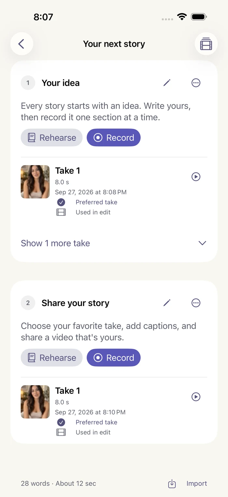
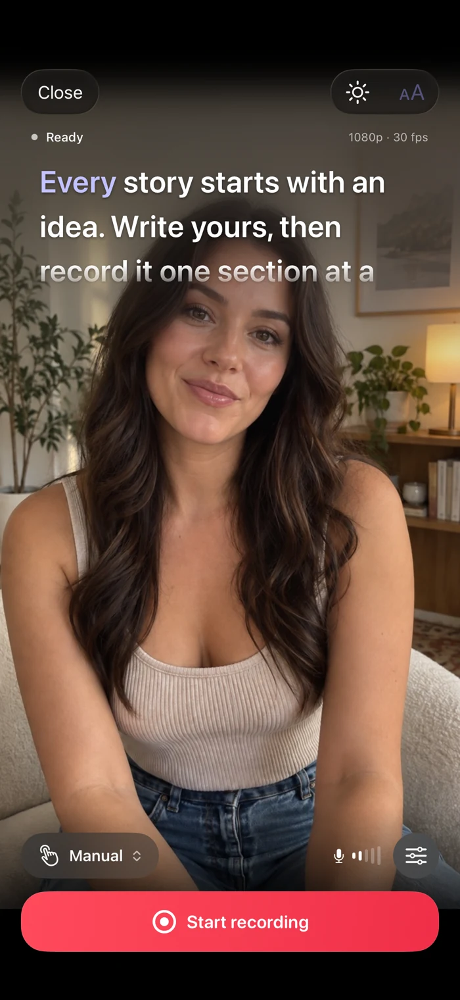
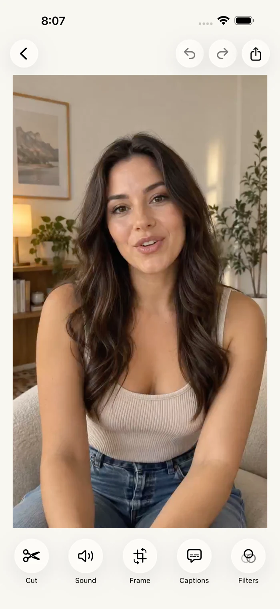
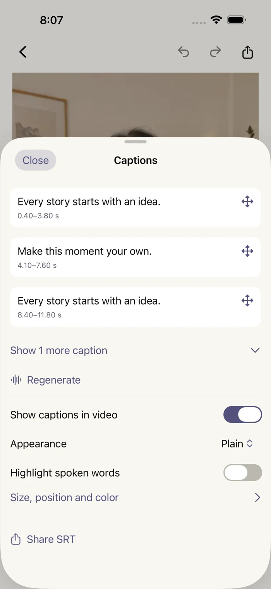

Yours, from start to finish.
Your scripts, recordings, and projects stay on your device. No Cadreur account to create. More room to create something else.
Our approach to privacyA little studio. A lot of possibility.
Big ideas don’t need a perfect take. Write, record, and shape your next video — one little section at a time.
3 free projects. No watermark. Just you.
Less memorizing. More being yourself.Illustrated preview
THE IDEA IS YOURS. THE FLOW IS HERE.
A teleprompter, a recording studio, and an editing room. All in your pocket. All working together.
Write your script or bring one along. Break it into small sections, then rehearse until the words feel like you.
Import TXT, RTF & PDF
Keep your script near the lens with the teleprompter. Record one section, try another take, and keep your favorite.
Manual, timed & voice-follow modes*
Trim the pauses. Arrange your clips. Adjust the frame, add music, and find a filter that feels right.
Your edit. Your creative control.
Create and style your captions so your story travels with every word. Export your video without a watermark.
Video, SRT captions & JPEG covers
Actual app screens with sample content. *Voice following and automatic transcription depend on your device and language.
FOR THE PERSON BEHIND THE CAMERA
A lesson you can make simpler. A business you believe in. A story only you can tell. You don’t need a bigger setup. Just a little space to get it out.
LESS IN YOUR WAY. MORE IN YOUR HANDS.
Your scripts, recordings, and projects stay on your device. No Cadreur account to create. More room to create something else.
Our approach to privacyEvery export is watermark-free, including your free projects. Because the name on your work should be yours.
A clean frame, every time.Make three complete video projects for free. Retake, edit, and export. Ready for more? Pro opens the door to unlimited projects.
A little more about ProCadreur is a teleprompter and video creation app for iPhone and iPad. Write or import a script, rehearse, record in short sections, pick your best takes, then edit and add captions — all in one app.
You get three complete video projects. A project counts when you save its first video take, so writing and rehearsing don’t use your allowance. Retakes, editing, and watermark-free exports stay available in activated projects. Deleting a project doesn’t restore an allowance.
No. Divide your script into sections and record each one separately. If a line doesn’t land, redo just that section. Choose your favorite takes and bring them together in the editor.
Voice following is available on supported devices and in supported speech languages. An Apple speech model may need to download first. You can also use manual scrolling or a fixed reading speed. App interface languages and supported speech languages are different; Pro doesn’t add speech support.
Cadreur runs on iPhone and iPad with iOS 26 or iPadOS 26 and later. The interface is available in English, Turkish, French, German, and Spanish. Projects stay on the device where you create them and don’t automatically sync.
Pro unlocks unlimited new projects. Choose a monthly or yearly subscription, or a one-time lifetime purchase. See current local prices in the app. Subscriptions renew automatically unless canceled in your App Store account.
Your script. Your take. Your video.
Start with three free projects.